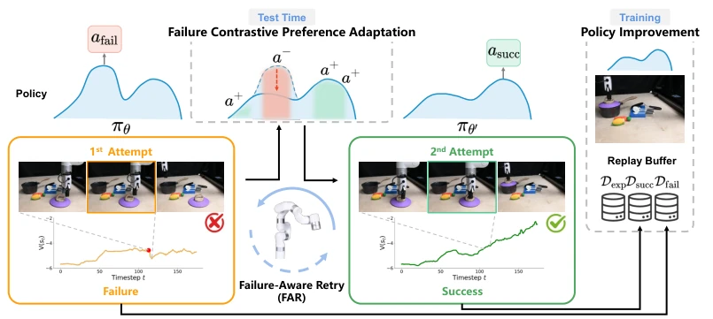
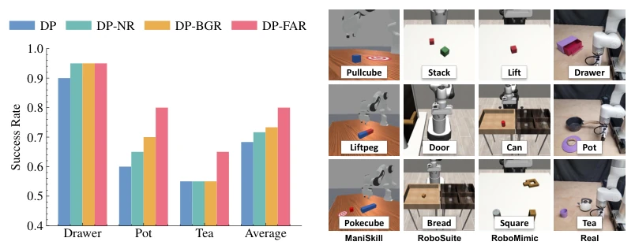
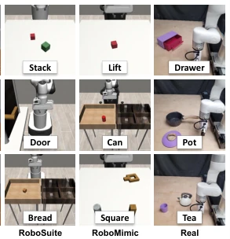
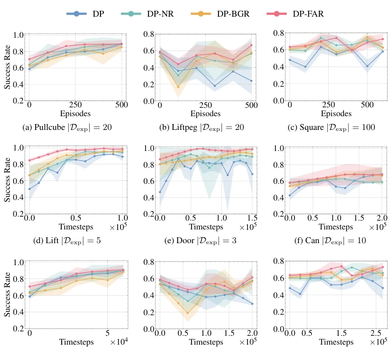

Robot deployment is frequently prone to failure; naive retry is merely repetitive, and existing recovery methods largely rely on human intervention. FAR attempts to enable robots to self-repair during testing, which is a highly attractive idea. However, its essence lies in test-time fine-tuning combined with value-guided preference optimization. The advantage is that it requires no human intervention and can leverage failure data. The disadvantage is its heavy reliance on Value Estimation; if the Critic is inaccurate, the policy may deviate. Furthermore, only Diffusion Policy was tested; would VLA work? Do not overhype this; in long-horizon tasks, it may still require human intervention to rescue the situation, and the failure detection mechanism still relies on environment feedback rather than visual understanding.
Offline policies inevitably encounter failure in real environments, leading to out-of-distribution (OOD) states. Existing methods either repeat mistakes [12, 13] or rely on human intervention [5, 6, 7]. FAR seeks to address the autonomous recovery problem of 'without resetting the environment or relying on humans'. Key challenges include the policy's tendency to repeat errors and limited exploration. Furthermore, online improvement typically suffers from low data efficiency and requires frequent environment resets. FAR aims to reduce reset costs and enhance policy robustness under challenging states by leveraging information from failure trajectories.
The framework is divided into three steps: 1. Failure Perception: Use an IQL-style Critic to conservatively estimate value, identifying action blocks that cause sharp value drops as negative samples. 2. FCPA: Sample actions from the current policy, filter out positive samples with higher value than negative samples, construct preference pairs, and update the policy using DPO-style denoising loss to avoid failure behaviors. 3. Continuous Improvement: Successful recovery trajectories are added to the Replay Buffer and online fine-tuned using AWR. Gaussian perturbation is added during retries to encourage exploration. Additionally, perturbations are smoothed via exponential smoothing to ensure stable execution on real robots. The core of this method lies in converting failure into preference learning signals rather than simply discarding them, while breaking local optima through perturbation to achieve test-time adaptation. It does not require task-specific dense rewards, relying only on task-level outcome feedback, thereby lowering the deployment threshold.

Figure 1: Overall Framework of FAR. After a failure, FAR identifies failure-inducing actions using value estimation, then updates the policy with both failure examples and alternative positive examples. The collected trajectories are added to the replay buffer for continual policy improvement.
Simulation (ManiSkill, RoboSuite, RoboMimic) + Real Robot (xArm). Baselines: DP, DP-NR, DP-BGR. FAR achieves an average improvement of 17.6% in simulation and 11.7% on real robots. Ablation studies show that both FCPA and perturbation are indispensable. Data efficiency is also higher, reducing the number of resets. In continuous improvement experiments, FAR performs better under the same number of resets, demonstrating its ability to utilize failure cases to improve data quality. Compared to baselines, FAR shows a more obvious advantage on long-horizon tasks such as Door, indicating a stronger capability to adapt to complex states.

Figure 2: Comparison Across Real-World Tasks. We conduct experiments on three real- world manipulation tasks that evaluate pushing, pick-and-place, and pouring skills.

Figure 3: Task Setup. We evaluate FAR in three simulated environments covering nine manipula- tion tasks, as well as three real-world tasks on a 7-DoF xArm platform.

Figure 6: Results on Continual Policy Improvement. The first row reports success rate against the number of online episodes, while the remaining plots report success rate against environment timesteps. FAR improves performance through online interactions, increasing data efficiency in terms of both resets and timesteps.